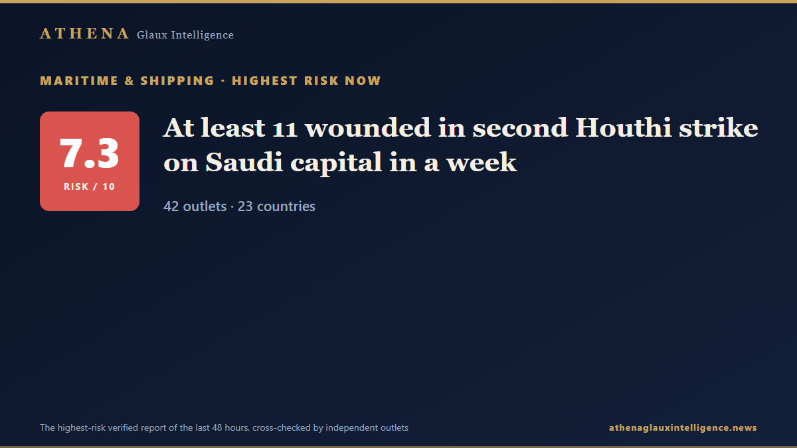
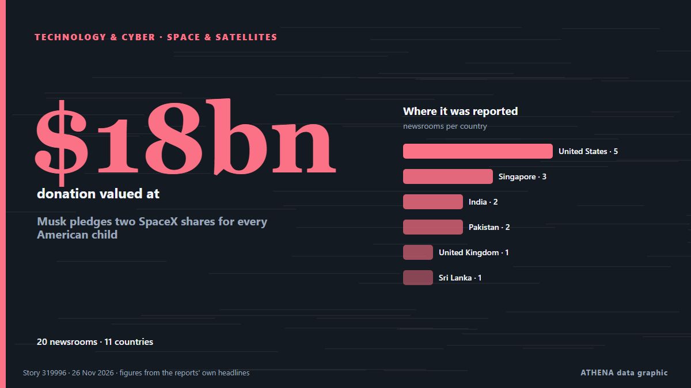

Risque 7.6Élevé
Géopolitique, économie et transport maritime — recoupés entre pays.
Géopolitique
Toute la géopolitique >Risque le plus élevé maintenant
Risque en hausseHausse au cours des dernières 24 heures
- Two Italians succumb to injuries in Kuwait drone attackRisque 0.0 → 5.8
- Trump, NATO chief urge Russia not to expand war in UkraineRisque 0.0 → 6.5
Maritime et transport
Bureau maritime >Risque le plus élevé maintenant
Risque 7.3Élevé
At least 11 wounded in second Houthi strike on Saudi capital in a week
Voir les preuves ›
Risque en hausseHausse au cours des dernières 24 heures
Chaque titre, vérifié dans plusieurs pays.
ATHENA Glaux suit 744 médias dans le monde. Une information devient un événement vérifié seulement lorsque des médias indépendants la rapportent. Chaque événement indique qui l'a publiée en premier et un score de risque avec ses raisons.
1 274événements en 24 h
744médias suivis
44minutes entre deux mises à jour
Séisme ou inondation près de chez vous cette semaine ?
Saisissez votre ville et voyez les séismes, inondations, tempêtes et alertes officielles à proximité, avec une liste du kit d'urgence 72 heures. Gratuit, sans inscription, et votre lieu reste sur votre appareil.
Des articles arrivent de médias indépendants : quand deux se rejoignent sur la même histoire, un événement vérifié naît.
Comment ATHENA vérifie une information
- CollecterLes reportages arrivent de médias indépendants dans de nombreux pays.
- CroiserQuand deux médias se rejoignent sur la même information, elle devient un événement vérifié.
- ExpliquerChaque événement montre qui était le premier, jusqu'où il s'est propagé et pourquoi le risque est ce qu'il est.
Perspectives mondiales des risques
Bilans hebdomadaires et mensuels : les événements les plus à risque, les tendances par domaine et par région, et ce qu'il faut surveiller.
Lire les perspectives ›Briefing quotidien
Les dix événements mondiaux les plus importants du jour, les risques en hausse et les nouveaux événements, chaque chiffre expliqué.
Ouvrir le briefing du jour ›
Technologie et cyberMusk pledges two SpaceX shares for every American child
Musk said in October he would give one of his SpaceX shares to every child in America. de The Straits Times
5.9Importance
0.0Risque · nul
89%Confiance
Les titres sont affichés en anglais, tels que publiés.
Énergie et environnement
US army to detonate 68 barrels of toxic lead in Iowa on day before Thanksgiving
Residents warned to stay indoors amid conflicting information about how far the dust plume could travel The US Army is set to detonate 68 barrels – five tons – of lead azide at an ammunition plant in… de The Guardian
Technologie et cyber
US finds no evidence China directed executive to spy on Nvidia CEO, WSJ reports
U.S. officials found no evidence that tech executive Alice Huang was directed by Beijing to spy on Nvidia CEO Jensen Huang, the Wall Street Journal reported on Wednesday, citing people familiar with… de The Korea Times
Sponsorisé
Cybernetics and Artificial Intelligence Lab Welcome to the Cybernetics and Artificial Intelligence Laboratory, established at the Department of Business Administration of the National and Kapodistrian University of Athens. The lab is headed by Professor Dimitrios Thomakos. The lab aims to do research that can be published in top venues. Our research uses tools and methods of Artificial Intelligence, and lies in the following areas: - Forecasting - Decision making - Cyber security - Finance We are always looking forward to collaborating with exceptional students!
En savoir plus – Cybernetics and Artificial Intelligence LabNavires dans les détroits du monde en ce moment
Comptages AIS en direct. Touchez ou survolez une barre pour le détail.
Derniers reportages
Trump says he'd like to see Putin 'pull back' military aggression in Europe
Urgent: Spain's Hernandez de Cos set to become new ECB president
Emilie Konig tells Paris court she is ‘ashamed’ of IS past
Bank of England warns a million UK homeowners could face £200 mortgage payment jump in 2027
Israel kills Hamas-appointed minister, with eight others in Gaza
Israel threatens to displace one million Palestinians in Gaza unless Hamas disarms
13:24 Russia, Ukraine exchange bodies of fallen soldiers in Belarus Society
Libya’s Parliament Offers Condolences to Egypt Over Cairo Fire
Géopolitique
Britain moving military aircraft to hangars at night over possible drone threats, media reports say
The Times and Sky News said it included plans to use anti-drone netting to protect exposed aircraft. de The Straits Times
Technologie et cyber
FirstFT: Nvidia halts chip shipments to south-east Asia
Also in today’s newsletter: EU common budget and software stocks. de Financial Times - Global economy
Énergie et environnement
16 dead and 10 missing as rescuers battle flooded Indonesian gold mine
Police only received reports of the trapped miners 16 hours after the flooding had occurred. de SBS News
Géopolitique, politique et sécurité
Plus ›Guerres et conflits
Russian Strike Kills 2 in Kharkiv as Moscow Pounds Ukraine with Ballistic Missiles, 100+ Drones
Russian drone strikes killed 2 people and injured 2 others in Kharkiv, while attacks across Dnipropetrovsk region injured one man and damaged civilian and energy infrastructure. de Kyiv Post
- Guerres et conflits
US warns citizens in Middle East amid rising Houthi attacks on Saudi Arabia
- Guerres et conflits
Key Russian oil hub on fire after drone attack – video, photos
- Diplomatie et sommets
S. Korean won gains slightly against U.S. dollar after BOK hikes key rate
- Guerres et conflits
Ukrainian forces strike two Russian oil refineries
Économie, finance et marchés
Plus ›Inflation et taux d'intérêt
Trump’s close MAGA confidant goes on ‘Muslim mayor’ tirade over Macy’s Thanksgiving parade
‘This is a safety concern. He doesn't control the weather, dumb***’ one X user responded. de The Independent
- Crypto et actifs numériques
Behind Binance Hack, a Reckoning Over Who Controls Crypto
- Devises (FX)
EDB to provide Centrum-Solutions up to US$60m for tankers
- Inflation et taux d'intérêt
Bank of Korea hikes rate to 3.25% against backdrop of strong economy
- Emploi et salaires
With the rise of AI, are we close to having universal basic income
Commerce, industrie et infrastructures
Plus ›Aérien, rail et route
Thanksgiving travel chaos with over 360 flights canceled and storms hitting both coasts
Storms on the East Coast have even led the postponement of the annual Macy’s Thanksgiving Day Parade. de The Independent
- Droits de douane et contrôles
Vietnam seeks talks to lower proposed US tariffs under Section 301 investigation
- Droits de douane et contrôles
Explained: How Trump’s proposed tariffs for India compare with rival nations
- Aérien, rail et route
Brussels, we have a Starlink problem
- Droits de douane et contrôles
Trump’s new tariffs aim to pry global trade from China’s grip
Énergie, ressources et environnement
Plus ›Sécurité énergétique
Nigeria: President Tinubu Felicitates ADC Presidential Candidate Atiku Abubakar At 80
[Presidency Nigeria] I extend my warmest congratulations to former Vice President and African Democratic Congress Presidential Candidate, Alhaji Atiku Abubakar, on his 80th birthday today, November… de AllAfrica
- Pollution et biodiversité
Vance shredded for trying to blame Obama for Iowa’s toxic lead after detonation backlash
- Climat et politique climatique
Davis calls for greater self-reliance after COP31 disappointment
- Pétrole et gaz
Tragic Sinking of MED EMRE Tanker Near Ibiza: One Dead, Six Injured
- Pétrole et gaz
Qatar LNG exports hit post-war high despite rising insurance costs
Technologie, IA et cybersécurité
Plus ›Cybersécurité
Fifa confirms internal data stolen in cyber attack
A person with direct knowledge of the matter told Reuters that no files from the abandoned FIFA Forward Enterprise project were accessed. de Citizen Digital
- Médias et désinformation
‘Trapped in grief’: wife of Japanese journalist detained by Russia pleads for his release
- Puces et calcul
Nvidia halts server shipments to four South-east Asian countries, including Singapore: Report
- Espace et satellites
U.S. approves SpaceX plan to deploy 1 million satellites for data centres in space
- Médias et désinformation
Five Ilam Media Outlets Shut Down After Reporting on Deadly Bus Crash in Iran
Entreprises et investissement
Plus ›Faillites et restructurations
Poundland collapses into administration putting 11,000 jobs at risk before Christmas
The discount retailer failed to secure a buyer on Wednesday. de Evening Standard (London)
- Investissements
Indian tycoon Sanjeev Mansotra to invest $933 million in Senegal's 600 million-tonne iron ore deposit
- Investissements
Climate negotiations: If COP31 cannot, what will?, By Samuel Stephen Wakdok
- Gouvernance et dirigeants
Tata Trusts To Go To Court Against N Chandrasekaran's Reappointment
- Investissements
EDB Investment in Uzbekistan Could Reach $3 Billion by 2031
Accidents et urgences
Plus ›Accidents et urgences
Egypt detains a driver suspected of causing Cairo tanker crash that killed 31
Egyptian authorities have detained a driver suspected of causing a fuel tanker to overturn on a major highway in Cairo. de ABC News (International)
- Accidents et urgences
One killed, five injured in BNP factional clash in Munshiganj
- Accidents et urgences
Sindh suspends SBCA chief, other officials over 'negligence' in Karachi building collapse
- Accidents et urgences
A year after Hong Kong's deadliest fire in decades, authorities are wary of memorials
- Accidents et urgences
A year after Hong Kong's deadly fire, survivors struggle with loss and lingering sense of injustice
Trois façons de lire aujourd'hui
Commencez par celle qui convient à votre tempsÉvénements vérifiés
Classés selon l'ampleur de la couverture
- Trump’s Nvidia Shares Gained Up to $14.8M After Huang’s Return188 médias · 56 paysRisque 4.2
- Iran says 2 oil tankers hit naval mines, catch fire near Oman’s Khasab port88 médias · 34 paysRisque 4.8
- Myanmar Situation Analysis: 9/11/2026 - 15/11/202651 médias · 30 paysRisque 7.0
- Saudi Arabia Stresses Human Responsibility in AI Use65 médias · 29 paysRisque 4.4
- MPs to be given first vote on Andy Burnham’s new EU deal next month38 médias · 21 paysRisque 4.3
Bureau d'évaluation
Posez une question et lisez une évaluation argumentée d'un sujet majeur, avec ce qui la démentirait.
Ouvrir le Bureau d'évaluation ›Aujourd'hui en chiffres
| 20:00 | 365 |
|---|---|
| 21:00 | 248 |
| 22:00 | 193 |
| 23:00 | 511 |
| 00:00 | 264 |
| 01:00 | 382 |
| 02:00 | 338 |
| 03:00 | 297 |
| 04:00 | 351 |
| 05:00 | 456 |
| 06:00 | 406 |
| 07:00 | 514 |
| 08:00 | 343 |
| 09:00 | 482 |
| 10:00 | 466 |
| 11:00 | 472 |
| 12:00 | 484 |
| 13:00 | 450 |
| 14:00 | 469 |
| 15:00 | 834 |
| 16:00 | 510 |
| 17:00 | 638 |
| 18:00 | 441 |
| 19:00 | 647 |
Risque des événements du jour
Géopolitique78Entreprises37Économie et marchés33Commerce et industrie31Technologie et cyber26Énergie et environnement21Maritime3
Signaux émergents
- Hausse soudaine · ActifDuterte
- Risque en hausse · Actif31 killed in fire after vehicle overturns in Egypt - UPDATED
- · ActifAndy Taylor & Duran Duran
- Hausse soudaine · ActifBOK
- Hausse soudaine · ActifGiza
Alertes officielles
- M 6.5 - Vanuatu regionM6.5 · USGS ·
- M 5.9 - 238 km SW of Yanglong, ChinaM5.9 · PAGER yellow · USGS ·
Restez informé
ATHENA Weekly Risk Picture
Les plus grands risques géopolitiques, économiques et maritimes de la semaine, recoupés et notés.
Chaque vendredi à 8 h (heure d'Athènes) · gratuit · en anglais
S'abonner gratuitementATHENA sur Telegram
Les nouvelles dès leur publication : les événements urgents de risque 6 ou plus, un récapitulatif horaire, les mises à jour des suivis de risque et le briefing quotidien à 10 h.
Gratuit · publications en anglais · désinscription à tout moment
Rejoindre le canalL'inscription est gérée par beehiiv avec double confirmation : rien de ce que vous saisissez n'est envoyé à ATHENA, et chaque numéro contient un lien de désinscription.
Suivi des risques
Plus ›Détroit d'OrmuzRisque 5.311 nouveaux événements cette semaine · en baisse (21 la semaine précédente)Mer RougeRisque 7.315 nouveaux événements cette semaine · en baisse (46 la semaine précédente)Grèce et TurquieRisque 3.76 nouveaux événements cette semaine · stable par rapport à la semaine précédenteChypreRisque 3.812 nouveaux événements cette semaine · en baisse (17 la semaine précédente)Sanctions contre la RussieRisque 6.414 nouveaux événements cette semaine · stable par rapport à la semaine précédenteGuerre en UkraineRisque 7.0214 nouveaux événements cette semaine · en baisse (266 la semaine précédente)Proche-Orient : Israël et GazaRisque 7.072 nouveaux événements cette semaine · en baisse (95 la semaine précédente)TaïwanRisque 2.711 nouveaux événements cette semaine · stable par rapport à la semaine précédentePétrole et gazRisque 6.830 nouveaux événements cette semaine · stable par rapport à la semaine précédenteCanal de SuezRisque 0.01 nouvel événement cette semaine · en baisse (3 la semaine précédente)Détroits turcsRisque 0.00 nouvel événement cette semaineCanal de PanamaRisque 0.00 nouvel événement cette semaineFlotte fantômeRisque 3.52 nouveaux événements cette semaine · en baisse (3 la semaine précédente)Navigation en mer NoireRisque 0.00 nouvel événement cette semaine · en baisse (5 la semaine précédente)Banques centrales et tauxRisque 4.243 nouveaux événements cette semaine · stable par rapport à la semaine précédenteÉconomie grecqueRisque 1.59 nouveaux événements cette semaine · en hausse (7 la semaine précédente)Énergie en Méditerranée orientaleRisque 0.02 nouveaux événements cette semaine · en baisse (4 la semaine précédente)BalkansRisque 4.913 nouveaux événements cette semaine · en baisse (26 la semaine précédente)Migration en MéditerranéeRisque 1.21 nouvel événement cette semaine · en baisse (3 la semaine précédente)
Risques mondiaux — semaine 48, 2026 (23–29 nov.) ›
Dans le monde
Moyen-Orient et Afrique du NordSaudi Arabia Stresses Human Responsibility in AI Use
58 événements
Amérique du NordStorm hits New York: Macy’s 100th Thanksgiving parade postponed for first time
57 événements
EuropeMPs to be given first vote on Andy Burnham’s new EU deal next month
55 événements
Asie du SudBangladesh’s ousted leader Sheikh Hasina plans to return from exile on December 16
54 événements
Asie du Sud-EstTrump says trade deal reached between the U.S. and the Philippines
53 événements
Afrique subsaharienneHuawei found guilty in trade secrets theft case
43 événements
Russie et EurasieRussian Strike Kills 2 in Kharkiv as Moscow Pounds Ukraine with Ballistic Missiles, 100+ Drones
40 événements
Asie de l'EstS. Korean won gains slightly against U.S. dollar after BOK hikes key rate
38 événements
OcéanieAustralia reaffirms Pacific climate commitment despite COP31 outcome
31 événements
Amérique latine et CaraïbesColombia rescues all hostages held at Cartagena supermarket
26 événements